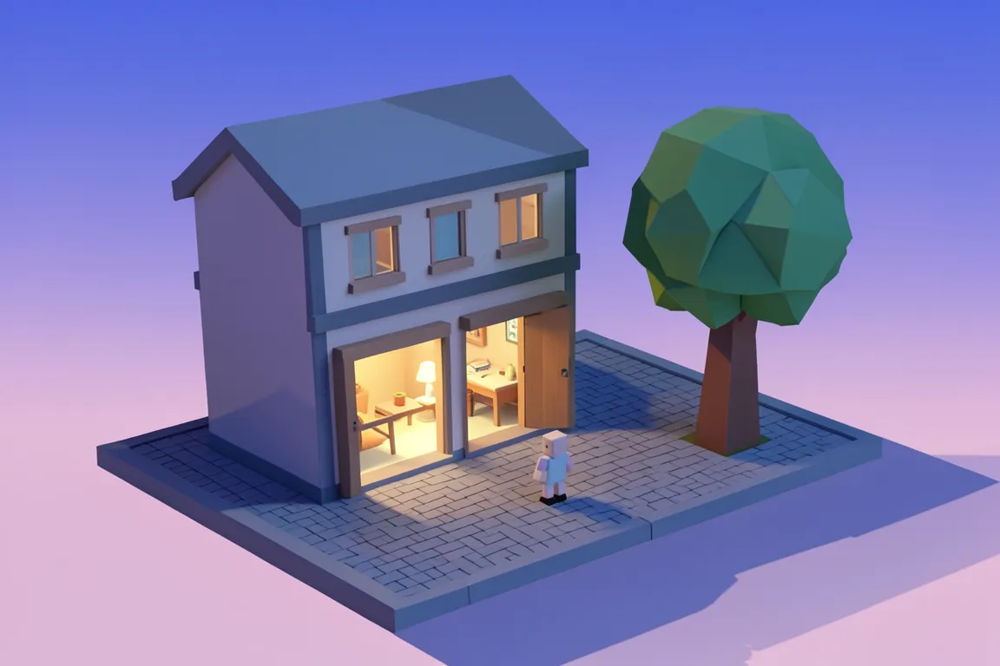

spill · 2014–now · også: Umulig isometri, Pastell geometrisk 3D, Flat low poly for mobil
Ren geometrisk arkitektur i ortografisk isometrisk visning, farget i flate pastellflater uten tekstur. Trapper, buer og tårn er bygd som en papirmodell, og rommet kan brettes til umulige former.

Kjerneidé
Arkitektur redusert til rene flater og en ortografisk visning blir et rolig puslespill som en hånd kan vri på.
Designprinsipper
Bruk et ortografisk isometrisk kamera uten perspektiv.
Farg hver flateretning i sin egen flate pasteltone: toppen lys, sidene mørkere.
Bygg bare med kuber, buer, trapper og søyler; ingen tekstur.
La det være romslig tomt rom rundt konstruksjonen.
Bruk en himmel med myk gradient i én fargetone som bakgrunn.